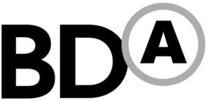

Trade Mark Journal No.2026/009 27 February 2026
WO0000001889684 (35,42)
Office of origin: United States of America
Date of International Registration:10 September 2025
Date of designation in the UK:
10 September 2025

The mark consists of the stylized letters "BDA" in uppercase. The letters "B" and "D" are presented in bold font. The letter "A" is formatted in superscript and is enclosed within a circle, which slightly overlaps the "D" in "BDA".
International priority date claimed: 12 March 2025
(United States of America)
(99080927)
- Class 35
- Services of advertising agencies; preparing promotional and merchandising material for others; cooperative advertising and marketing; retail services by means of electronic catalogs connected with the sale of clothing, footwear, headgear, sportswear, uniforms, bags, backpacks, tote bags, sports bags, drinkware, mugs, cups, water bottles, flasks, stationery, pens, pencils, notebooks, notepads, diaries, folders, lanyards, keyrings, badge holders, wristbands, umbrellas, towels, blankets, USB flash drives, power banks and phone charging cables; mail order services connected with the sale of clothing, footwear, headgear, sportswear, uniforms, bags, backpacks, tote bags, sports bags, drinkware, mugs, cups, water bottles, flasks, stationery, pens, pencils, notebooks, notepads, diaries, folders, lanyards, keyrings, badge holders, wristbands, umbrellas, towels, blankets, USB flash drives, power banks and phone charging cables; direct mail advertising services; advertising services, namely, creating corporate logos for others; advertising services, namely, creating corporate and brand identity for others; distributorship services in the field of promotional merchandise; administrative processing of purchase orders; providing advertising, marketing and promotional services, namely, development of advertising campaigns for sports teams and businesses.
- Class 42
- Product development; graphic art design; custom design of apparel based on personal selections made by the customer; new product design services; graphic design services; packaging design; website design and development for others; web site hosting services.
Bensussen Deutsch & Associates, LLC
Representative: Josh-IP.Law, 99 Bishopsgate London EC2M 3XD UNITED KINGDOM